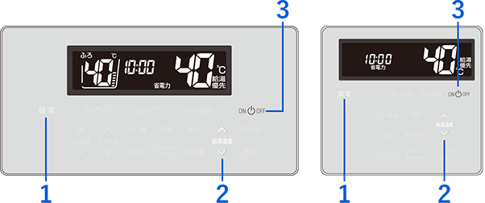
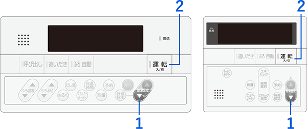
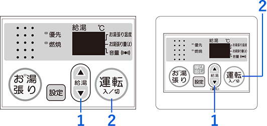
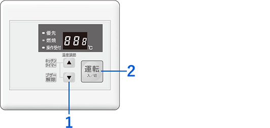
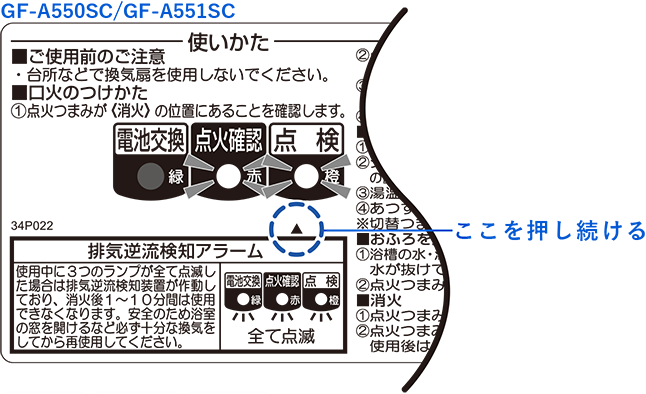

標準的なご使用期間に達したことによる「点検時期のお知らせ」です。
そのままご使用いただけますが、安全のため「あんしん点検」をご依頼ください。
パーパス製の家庭用ガス温水機器（給湯器、ふろがま、給湯暖房用熱源機など）を安全に長くお使いいただくための点検制度（有料）です。
長年の使用による経年劣化での事故を未然に防ぐため、メーカーが推奨しています。
新しく対象製品をご購入されたお客様や、アパート・マンションのオーナー様は「所有者登録」を事前に行うことをお勧めします。登録しておくことで、点検時期が近づいた際にメーカーより案内通知が届くようになります。
パソコンやスマホから専用フォームで登録可能です。製品同梱の「所有者票（はがき）」に記載されている「16桁の登録用コード」をご用意ください。
同梱の「所有者票」に必要事項をご記入いただき、ポストへ投函するだけで完了です。（切手不要）
標準的な設計上の使用期間（またはそれに相当する使用回数）に達すると、リモコンの画面に「888」または「88」が点滅したり、本体の「点検」ランプが点灯します。点検を受けるまでの間、以下の操作で一時的にアラーム表示を消すことができます（※約1年後に再度表示されます）。





製品により異なりますが、基本的には口火点火操作を行い、「操作パネルの▲ボタンを、お知らせランプが消えるまで（10秒以上）長押しする」ことでリセットが可能です。
※参考：パーパス社 タイムスタンプ解説ページ（各リモコンの図解が掲載されています）
「あんしん点検」は有料の法定外点検となります。費用は以下の3つの項目の合計となります。
| お客様ご自宅までの片道距離 | 料金（税込） |
|---|---|
| 30km以内 | 2,750円 |
| 50km以内 | 3,300円 |
| 以降10kmごと | ＋550円 追加 |
| 対象機器 | 作業時間 | 料金（税込） |
|---|---|---|
| ふろ給湯器・大型給湯器（50号以上） | 約60分 | 5,500円 |
| 小型湯沸し器・単機能給湯器（50号未満） | 約45分 | 4,400円 |
| 項目 | 料金内容 |
|---|---|
| 高所作業 | はしごが必要な高所作業となる場合は、技術料が1.5倍となります。 |
| 駐車場・有料道路 | 訪問時に有料駐車場（コインパーキング等）や有料道路を使用した場合の実費をご負担いただきます。 |
| 特殊な設置状況 | 点検に際して製品の取り外し等が必要な場合は、別途費用（お見積り）がかかります。 |
あんしん点検のご依頼や、引っ越し等に伴う所有者情報の変更、その他ご不明点は以下の専用窓口へご連絡ください。